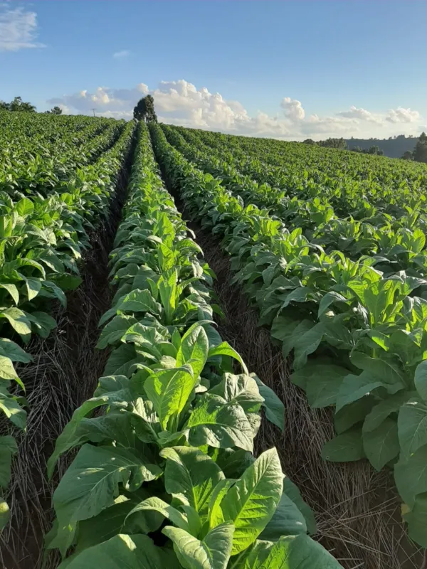

O que é a fumicultura?
A fumicultura é a atividade agrícola relacionada ao cultivo, manejo e produção do tabaco. Essa cultura possui importância econômica e social em diversas regiões produtoras, especialmente em propriedades familiares.
Ao longo dos anos, as técnicas utilizadas pelos produtores passaram por diversas transformações. Ferramentas manuais, equipamentos e máquinas agrícolas foram sendo incorporados ao processo produtivo, buscando aumentar a eficiência e reduzir o esforço físico dos trabalhadores.

A evolução da fumicultura
Durante muito tempo, grande parte das atividades da fumicultura foi realizada de forma manual. O preparo do solo, o plantio, os cuidados com as plantas, a colheita e outras etapas exigiam grande quantidade de mão de obra.
Com o desenvolvimento da agricultura e o avanço tecnológico, novos equipamentos começaram a auxiliar os produtores. Essa evolução modificou gradualmente a rotina nas propriedades rurais.
Principais mudanças ao longo do tempo
- Maior utilização de ferramentas e equipamentos agrícolas;
- Melhoria das técnicas de preparo do solo;
- Desenvolvimento de máquinas para diferentes etapas da produção;
- Maior preocupação com ergonomia e segurança no trabalho;
- Uso crescente de tecnologias para planejamento e controle da produção;
- Busca por maior eficiência e redução do trabalho repetitivo.
“A mecanização agrícola representa uma das principais transformações ocorridas no campo, contribuindo para modificar a maneira como diversas atividades são realizadas.”
A mecanização na fumicultura
A mecanização consiste na utilização de máquinas, equipamentos e ferramentas para auxiliar ou realizar determinadas operações agrícolas. Na fumicultura, esse processo pode estar presente em diferentes momentos da produção.
A utilização de equipamentos pode contribuir para diminuir o esforço físico e tornar algumas operações mais rápidas. Entretanto, a mecanização deve ser planejada de acordo com as características da propriedade e da atividade realizada.
Preparo do solo
Máquinas e implementos agrícolas podem auxiliar no preparo e manejo do solo antes do cultivo.
Plantio
Equipamentos específicos podem facilitar determinadas operações relacionadas ao estabelecimento das plantas.
Transporte
Equipamentos de transporte podem reduzir o esforço necessário para movimentar materiais e produtos.
Processamento
A modernização também alcança etapas posteriores, buscando maior organização e eficiência.
Tecnologia e futuro da fumicultura
O avanço tecnológico está criando novas possibilidades para a agricultura. Sensores, sistemas de monitoramento, ferramentas digitais e máquinas mais eficientes podem contribuir para uma produção cada vez mais planejada.
Além da produtividade, a tecnologia pode colaborar com a segurança do trabalhador e com a redução de tarefas excessivamente repetitivas.
Benefícios da mecanização
- Redução do esforço físico em determinadas atividades;
- Maior rapidez na execução de algumas operações;
- Possibilidade de melhorar a organização do trabalho;
- Maior precisão em determinadas operações agrícolas;
- Incentivo à modernização das propriedades rurais.
Desafios
Apesar das vantagens, a mecanização também apresenta desafios. O investimento inicial em equipamentos, a necessidade de manutenção, a capacitação dos operadores e as características específicas de cada propriedade devem ser considerados.
Conclusão
A história da fumicultura demonstra como a agricultura pode passar por mudanças significativas com a introdução de novas técnicas e tecnologias. A mecanização representa uma etapa importante dessa evolução, especialmente na busca por eficiência, segurança e redução do esforço físico.
O futuro da atividade tende a estar cada vez mais relacionado ao uso consciente da tecnologia, à capacitação dos produtores e à busca por métodos que conciliem eficiência produtiva, segurança e sustentabilidade.